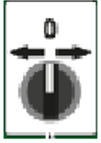
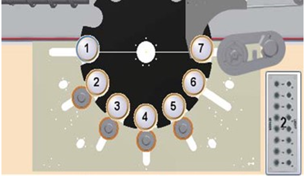
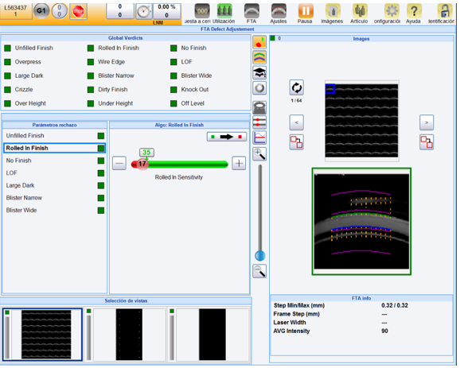
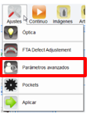
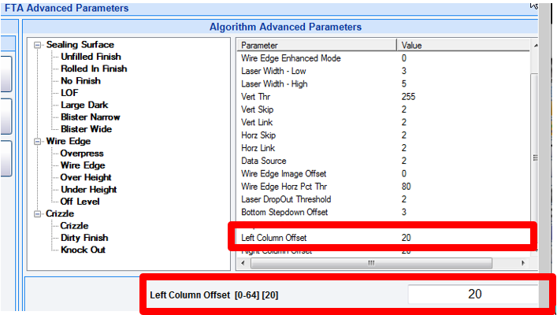
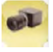
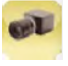
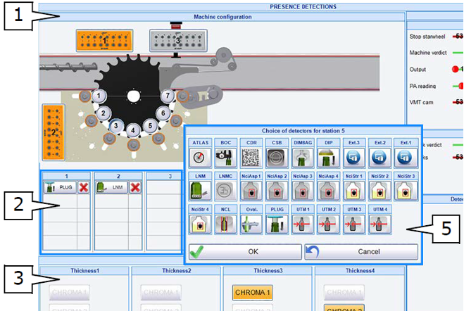
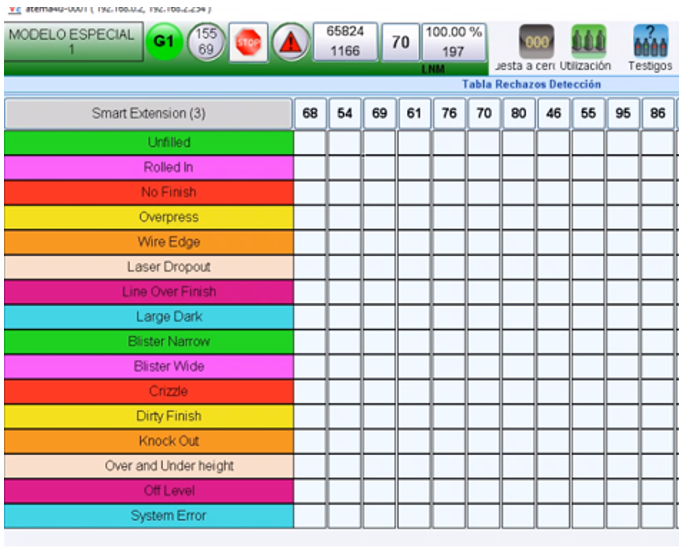

Finish Setup - Tiama - FTA with CALIA3 on MX4
INS-03-102
Revised: 2021-10-12
Purpose and Application
Purpose
To define a work instruction for proper setup of the Finish Top Analysis inspection device on a fully integrated MX4 Machine.
Application
This work instruction applies to all Soul manufacturing facilities.
Safety
Observe Soul standard safety requirements and procedures defined by the Global Environmental Health & Safety (EH&S) organization, as well as all applicable local, regional, and national requirements. Safety equipment and instructions specific to the completion of this work instruction are detailed in the Instructions Section.
Instructions
-
Before starting the work instruction activity, perform the following steps:
- Do not begin these tasks without confirmation that personnel directly involved have completed the required training associated with the work instruction activity and have reviewed this document.
- Gather necessary tools and equipment as identified below in the Equipment Section.
- Wear and use additional Personal Protective Equipment (PPE) and safety equipment required for this specific work instruction.
- Obey all applicable safety requirements and procedures.
- Notify appropriate personnel of the activity and estimated time needed to complete the tasks.
- Clearly identify, mark-off, and secure the designated area defined by the work instruction activity.
- Follow all Lockout/Tagout procedures when work instruction activity requires isolating energy in the designated area. Verify energy is isolated before starting work.
- After verifying that energy is isolated, remove the protective guarding and open the safety interlock gates.
-
Prerequisites
-
Monitor the production flow to ensure that the machine is properly set up in
accordance with Work Instruction INS-03-100 Container Handling Setup - Tiama -
MX4.

-
Monitor the production flow to ensure that the machine is properly set up in
accordance with Work Instruction INS-03-100 Container Handling Setup - Tiama -
MX4.
-
To set up the motor-driven movable frame, perform the following steps:
-
Confirm the motor-driven movable frame height adjustment in accordance with
Work Instruction INS-03-100 Container Handling Setup - Tiama - MX4.

-
Jog a commercial quality container of the type to be inspected into station 5
or other station where FTA is installed on the machine.
- The MX4 should be in Manual mode
 .
. - Move the container using the  selector.

- The MX4 should be in Manual mode
-
Verify that the gauge light is on.
- The gauge signal is shown on the status bar. When the container can be inspected, the gauge light changes from gray to green.
Figure 1. Tiama MX4 Gauge Light: 
-
Confirm the motor-driven movable frame height adjustment in accordance with
Work Instruction INS-03-100 Container Handling Setup - Tiama - MX4.
-
For the mechanical setup of the FTA Head Assembly, perform the following steps:
-
Select Detections > FTA from the Main Menu.

-
Select Settings > Optics from the Main Menu.

-
Select the finish surface view and enable the laser.
- Activate the laser by clicking on the
 button in the
FTA Laser Source
Settings
menu.
button in the
FTA Laser Source
Settings
menu. - The right image must show the finish surface with the cross hairs and laser.

- Activate the laser by clicking on the
-
While monitoring the Scope Screen, slightly loosen the Locking Screws and
adjust the position of the Head Assembly left/right using the Adjustment Knob
until the sealing surface image is horizontal as in the image shown. When
finished, tighten the Locking Screws.
- Locking Screws (left/right) [1].
- Adjustment Knob (left/right) [2].

-
While monitoring the Scope Screen, loosen the Locking Handle and adjust the
position of the Head Assembly in/out using the Adjustment Knob until the
sealing surface image is vertically centered as in the image shown. When
finished, adjust the Locking Handle.
- Locking Handle (in/out) [1].
- Adjustment Knob (in/out) [2].

-
When the laser is centered on the crosshairs, confirm that the sealing
surface of the container is in focus. If it is not, the FTA Head requires
realignment or repair.
Note:
The previous adjustment steps may need to be repeated until the image is centered on the crosshairs.

-
Tilt adjustments (if installed).
- Tilt adjustment knob [1].
- Tilt adjustment blocking screw [2].
- Tilt adjustment default position pin [3].

-
Select Detections > FTA from the Main Menu.
-
To adjust the FTA light and laser settings, perform the following steps:
-
Adjust the Sealing Surface Balance slider to obtain an even contrast
throughout the image from top to bottom.

-
Adjust the Laser Intensity.
- Activate the laser by clicking on the button in the FTA Laser Source Settings menu.
- Move the Laser Intensity slider until the Avg. Spot Width slider turns to green.
- The ideal Avg. Spot Width is 4.0.


-
Adjust the Sealing Surface Balance slider to obtain an even contrast
throughout the image from top to bottom.
-
For the software setup of the FTA, perform the following steps:
-
Select Settings > FTA Defect Adjustment.
- The MX4 should be in Pause mode
 .
.


- The MX4 should be in Pause mode
-
Learn the Top and Bottom finish limits.
- Click on the
 button.
button. - Drag the Top and Bottom blue lines to the Top and Bottom limits of the Finish surface as shown.
- Press the Learn button.

- Click on the
-
Select the Image Contrast and Luminosity.
- Click on the
 button.
button. - Move the Contrast and Luminosity sliders as required to better see the surface image.
- This affects the displayed image only. It does not change the optical or light setup done previously.

- Click on the
-
Show the Over height/Under height values.
- Click on the
 button.
button. - Click on the Sealing Surface button.
- The bottom image will show a green dot graphic with the values measured from the frames. The red lines are the threshold values defined.

- Click on the
-
Set up the revolutions per gauge.
- Select Settings/Advanced Parameters.
- Confirm the Rev Per Gauge value is set to 1.50.

-
Select Settings > FTA Defect Adjustment.
-
To verify there is no stray light coming from nearby stations (NCI, NCL or others), perform the following steps:
-
If there is no possibility to reduce stray light on the left side of the
image by changing the position of the NCI lamp or masking the NCL lamp, set the
WE Offset Left Column to 0.
- Enter to Settings/Advanced Parameters.
- Select the Left Column Offset parameter.
- Modify the value to 0.



-
If there is no possibility to reduce stray light on the left side of the
image by changing the position of the NCI lamp or masking the NCL lamp, set the
WE Offset Left Column to 0.
-
To review the Pockets screen of the FTA, perform the following steps:
-
Select Settings > Pockets from the Main Menu.

-
Setting thresholds.
- Click on the Settings button
 .
. - Select Alarm configuration .
- Click on the Threshold option
 .
. - Set the threshold values.

- Click on the Settings button
-
Select Settings > Pockets from the Main Menu.
-
To confirm the FTA inspection and the appropriate inspection channels are
enabled.
-
Verify the Reject Parameter settings are within the ranges specified in the
FTA section of MSDR INS-07-031 Inspection Device Setup Parameters for Soul
Equipment.
- Go to Settings > FTA Defect Adjustment.
- Select each Reject Parameter to modify the desired settings/thresholds.


-
Verify that the FTA inspection is enabled.
- The MX4 should be in Manual Mode.
- Select Configuration
 > Detector
Presence
 to display the
Presence Detections display.
> Detector
Presence
 to display the
Presence Detections display. - Click on the station 5 (or the station where the FTA is installed) button.
- Click on the FTA inspection
 to display the FTA
verdict activation screen.
to display the FTA
verdict activation screen.

-
Verify the FTA inspection IS NOT inhibited.
- Select Utilization > Inhibition.
- Confirm the FTA inspection IS NOT in orange. (Orange means the inspection is inhibited.)

-
Verify the defect mapping function in the MX4 software.
- Select Utilization
 > Rejects
Table
> Rejects
Table
 to display the
Rejects table screen.
to display the
Rejects table screen. - Click on the FTA Box.

- Select Utilization
-
Verify the Reject Parameter settings are within the ranges specified in the
FTA section of MSDR INS-07-031 Inspection Device Setup Parameters for Soul
Equipment.
-
Upon completion of tasks, perform the following steps:
- Replace protective guarding and close safety interlock gates.
- Confirm the designated work area is clear and communicate to personnel the intent to restart energy.
- After the designated work area is confirmed clear and personnel are aware of the pending restart, follow all Lockout/Tagout procedures to restart energy supplied to the designated area. Verify energy is active.
- Remove signs and markings from the designated work area.
- Perform basic housekeeping duties. Clean up the work space, tools and equipment, dispose of trash, put tools and equipment in assigned area.
- Notify appropriate personnel that the work instruction activity has been completed.
Required Training
Before performing this work instruction, applicable personnel must be trained by an authorized trainer on the required training contents listed in this document.
Equipment
Allen wrench set
Wrench set
Screwdriver set
Commercial Quality Container
Challenge samples containing the defect to be rejected
Definitions
- Rough container type
- Finish edges are rough due to a dirty finish or blurred due to curvature of the crown finish.
- No Step container type
- Improve Wire Edge or Overpress Finish detection on containers with no or very slight step downs. Only use this type after plant evaluation of tradeoffs against
References
INS-06-001 FTA Head Verification & Maintenance
INS-07-030 Minimum Inspection Channels for Soul Equipment
INS-07-031 Inspection Device Setup Parameters for Soul Equipment
Document Classification
- Efficiency and Throughput
- Quality
Fundamentals
- INS-305
Approval
|
Region |
Representative |
|---|---|
|
Europe |
Robert Kurpiel, Bruno Laumier, Stefano Lucidi, Hans de Willigen |
|
Latin America |
Marlon Bravo |
|
Mexico |
Yigael Hernandez |
|
North America |
David Gladwin |
|
Global Operations |
Bob Morin |
Revision History
|
2021-10-12 |
Approved by Bob Morin, Global Inspection Network Leader |
|
Original Issue |